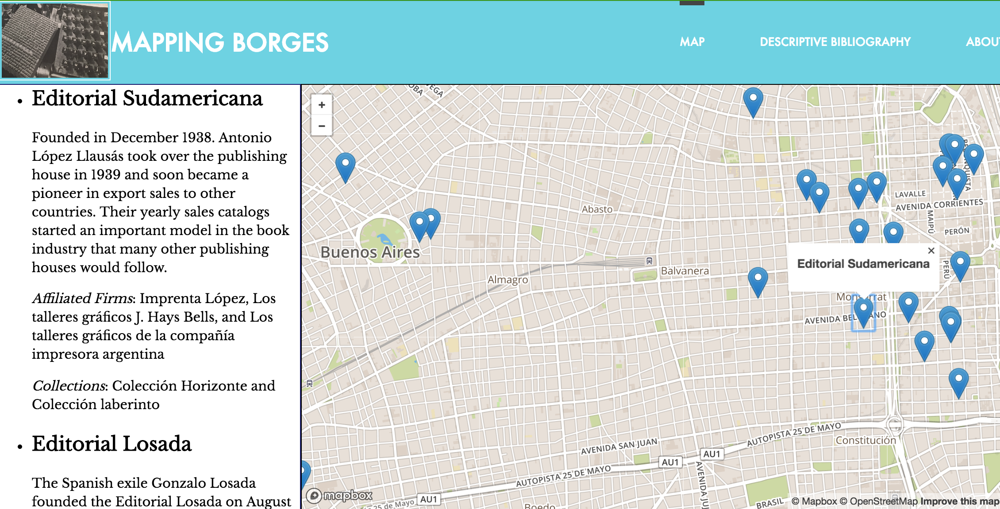
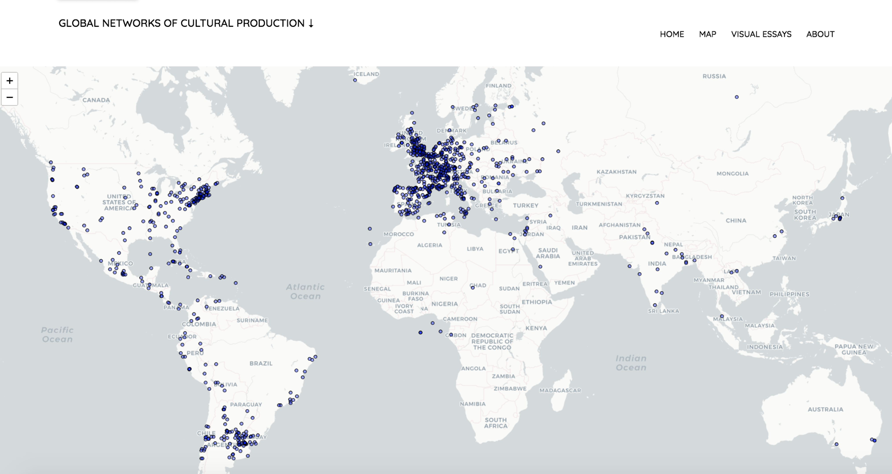

 As part of my first monograph, Borges and the Literary Marketplace: How Editorial Practices Shaped Cosmpolitan Reading (Yale University Press, 2021), I engineered this mapping and data visualization project to trace the role of publishers and printers in Jorge Luis Borges’s Argentina (1930-1951) and to provide a digital archive of records of the physical features of books from this moment and time in history. This project has two distinct elements. The first is an interactive map of the locations of Borges's publisher, printers, booksellers, and places of employment from 1930 to 1951. This part uses Leaflet to visualize all of the geospatial data I collected about the publishing firms and printers that Borges worked with in Argentina. Along with each physical point I created on the map, I have included brief histories of these firms, an inventory of Borges’s books that they produced, and a list of interconnected firms, all of which pops up in a box alongside the geographical locations. The second part of the project is a descriptive bibliography, or a description of the physical elements of the books that Borges wrote, prologued, translated, or edited during the 1930s and 1940s. I chose the sleek horizontal timeline format for its clear presentation and also to challenge to myself with a semi out-of-the-box tool. In light of the fact that there are virtually no extant publishers’ archives from the Argentine firms I have been studying for my research, I see this DH project as a way to give future scholars access to much of the raw data I created while researching for my first monograph and, hopefully, provide them with a resource to create projects of their own. Check out the appendix here.
 As a postdoctoral fellow at Princeton, I researched the influence and effect of global literary networks on print culture in Latin America. More specifically, I built a database and generated a series of network graphs centered on Victoria Ocampo’s publishing enterprise. My findings informed the groundwork for my current monograph, Global Interdependence in the Latin American Book Market, 1940–1970, which examines how international publishing firms directed their energies toward Latin America, what kinds of strategies they employed, and which areas they targeted as they began to enter the market and forge collaborative alliances; it also identifies the kinds of materials that these firms supplied, again driven primarily by market considerations. Generally speaking, this digital work has revealed not only the intricate global circuits of conversations and collaboration that blossomed during this time, but also an archive of metadata about the physical aspects of the documents that link all of the involved intellectuals, from writers and translators, to artists and agents. Check out the project here.